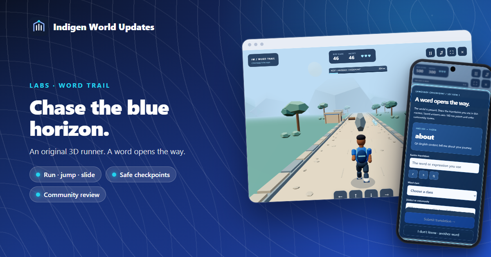
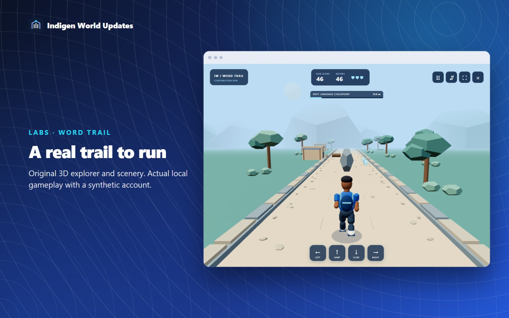
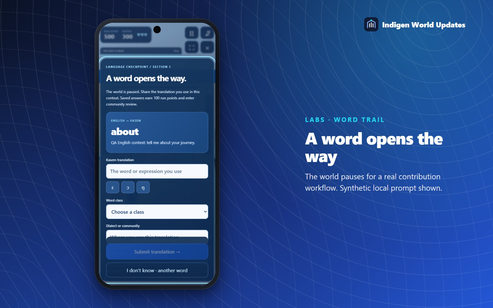
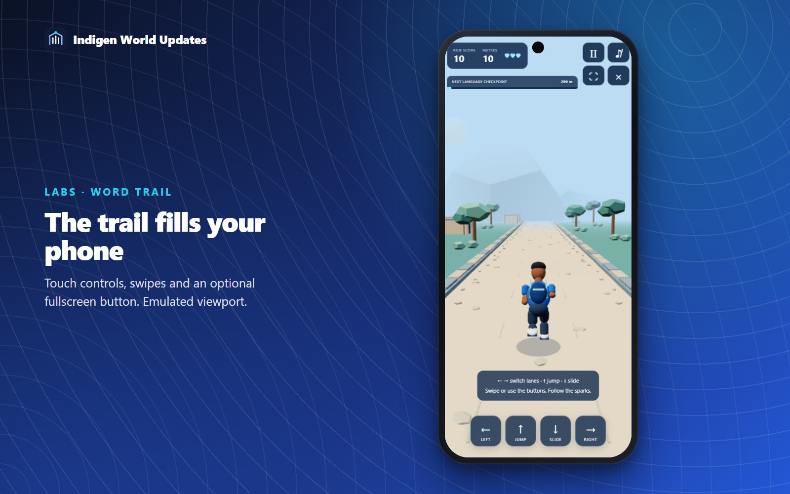
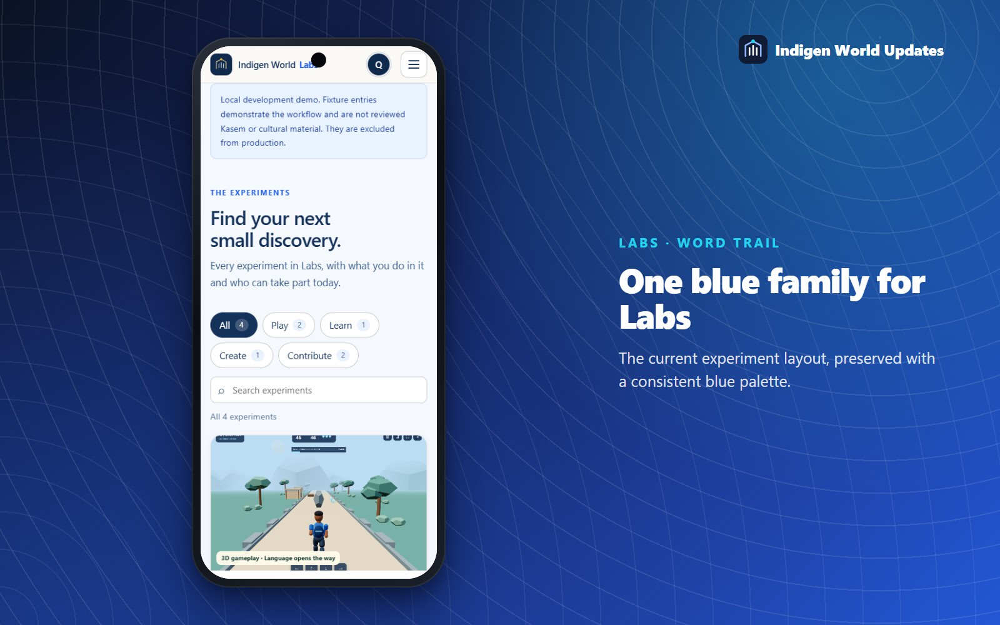

Word Trail now takes you onto the trail. Our experimental language adventure opens into a viewport-filling 3D game, with an animated explorer, a blue horizon and language checkpoints inside the run.

Switch between three lanes, dodge rocks, jump low logs and slide under blue awnings. Collect sparks and keep an eye on your three hearts. The game pauses automatically when you leave the tab, and Pause, sound, fullscreen and Exit controls stay close at hand.
On a keyboard, use A/D or the left/right arrows to change lanes, Space or the up arrow to jump, and S or the down arrow to slide. Press Escape to pause. On a touch screen, swipe in the direction you want or use the large game buttons. Browser fullscreen is optional.
Every 300 metres, the world stops safely behind a language checkpoint. Contribution runs ask for a translation from the existing English word queue, with its example context and available attribution. Kasem letters, word class, dialect or community and optional usage notes stay in the same panel.

A successful submission says Saved for community review and adds 100 run points once. It does not mean the translation is correct, verified or published. Community review and contributor rewards continue to follow their existing rules. Run score has no cash value.
A failed save keeps your writing in the open panel for retry. The existing backend receipt protects against duplicate submissions and repeat bonuses. If you do not know a word, ask for another. If the queue is empty or you prefer to keep running without contributing, switch deliberately to local practice. Your account's saved contribution gate remains available when you return.
Guest practice offers a slower introduction without sign-in. Practice checkpoints are pauses, and device best scores are personal progress. They do not save translations or create contributor rewards. Signed-in contribution runs continue to respect the experiment's availability and invitation settings.

The established Labs layout now uses a consistent blue palette across experiment cards and Culture Quest. The current card layout and restrained transitions are preserved. Word Trail has a compact launch page with an actual 3D scene preview.

Word Trail remains an alpha visual action game and requires WebGL 2. There are reduced camera motion and optional camera-shake settings, and the game remains understandable with sound muted. The original character uses procedural joint animation; the environment is a fictional contemporary trail, not a reconstruction of a Kassena monument. No proprietary runner-game assets or purported traditional music are included.
Unsaved writing stays in the current game panel, not across a page reload. Reloading recovers your saved account section and checkpoint; a running section starts again. Real-device performance and soft-keyboard behavior still need broader phone testing.
Open Word Trail and choose Play Word Trail after signing in, or Try practice to find your feet.